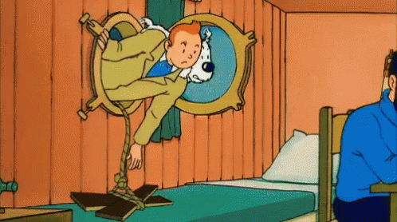

Olá! Meu nome é Gustavo, moro em Recife.
Já programo há alguns anos (2018), porém fiquei ensino médio todo sem programar. Estou retornando aos estudos agora.
Eu gosto bastante de filosofia, sociologia e afins.
P.s: quando eu tava fazendo essa atividade só lembrei de como eram os sites antigamente. Hahaha! Era mil vezes melhores do que esses sites cheios de JavaScript.
Meu github